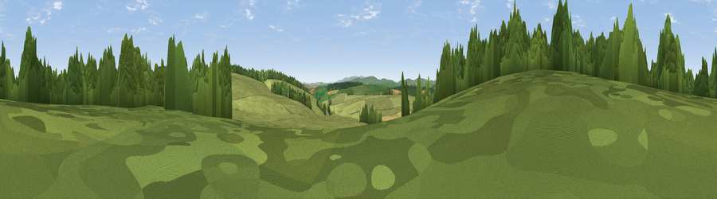

Viewpoint c5744_6376
#37086 in England · top 95% of its area beats it · —Where it is
The exact computed spot (SO 18825 87225). Click the marker for map links.
The view, rendered

A 360° render of this exact spot computed from the terrain model, tree cover and land cover — summer colours, afternoon light, calibrated against photographs of famous viewpoints. Real trees, hedges and buildings will differ in detail.
The panorama
Grey silhouette: terrain skyline in each direction (720 bearings, Earth curvature and refraction included). Dashed green: skyline with trees (+15 m) and buildings (+8 m) as obstacles. Blue strip: how far the ground is visible on each bearing.
Where the view opens
Wedge length = distance to the farthest visible ground on that bearing (vegetation-aware). Rings at 10, 25 and 50 km.
What fills the view
67% grassland · 31% woodland · 2% cropland
Angular shares of the visible panorama (visual magnitude), not map area. Landscape diversity 0.31 (0–1 Shannon).
Key numbers
More beautiful places nearby
The staircase of upgrades: each row has a higher view potential than everything closer. Driving times are estimates from straight-line distance, calibrated against real road routing — check an actual route before setting out.
| Place | Direction | Drive | Score |
|---|---|---|---|
| Viewpoint c5720_6366 | SSW · 1 km | ~4 min | 34.6 |
| Viewpoint c5772_6450 | ENE · 4 km | ~9 min | 72.5 |
| Viewpoint near Bishop's Castle | ENE · 9 km | ~17 min | 75.5 |
| Viewpoint near Lydham | ENE · 16 km | ~29 min | 78.6 |
| Burrow | ESE · 20 km | ~33 min | 79.4 |
| Viewpoint near Asterton | E · 21 km | ~35 min | 83.0 |
| Viewpoint near Halfway House | NNE · 29 km | ~45 min | 83.3 |
| The Lawley | ENE · 32 km | ~50 min | 85.8 |
52.47689, -3.19660 · source: screening · position refined by local search. Computed location — check access rights before visiting.